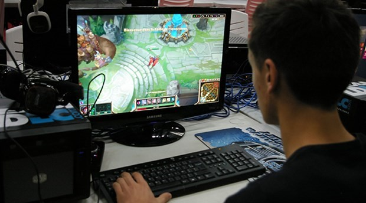

Bligisayar Oynamak
Fotoğraftan da anlaşılacağı gibi League of Legends favorilerimden biriydi. Bu zamana kadar Metin2, Silkroad, WolfTeam, CS1.6, CSGO vb. birçok online oyun oynadım. Fakat 1 yıldır oyuna 1 saatten fazla zaman harcamıyorum.